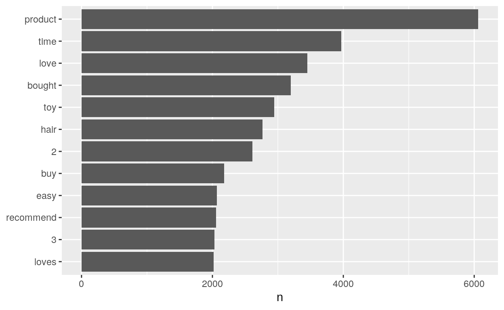
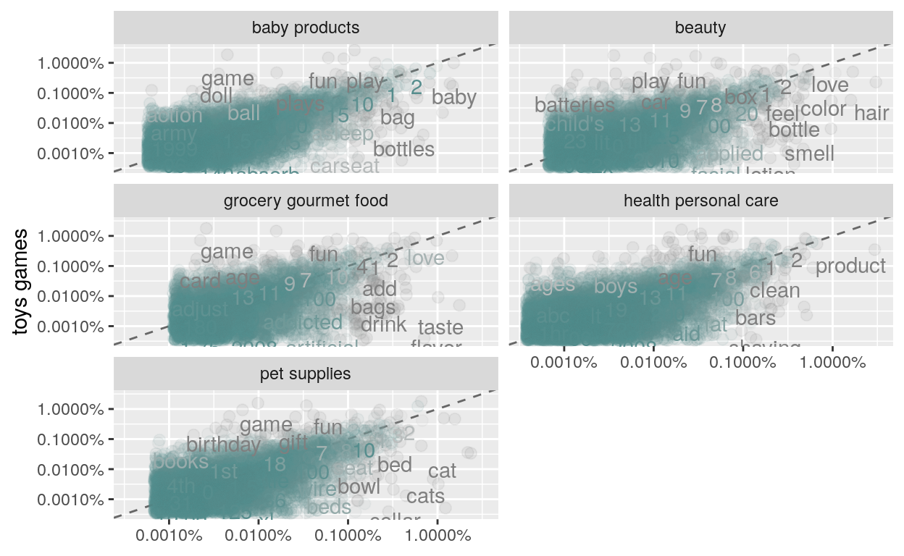
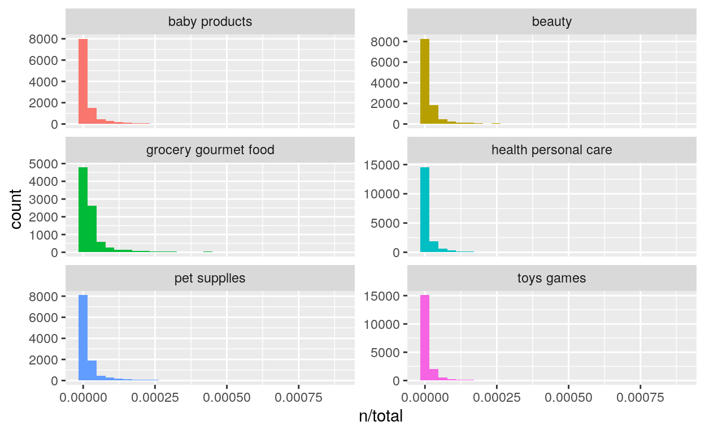
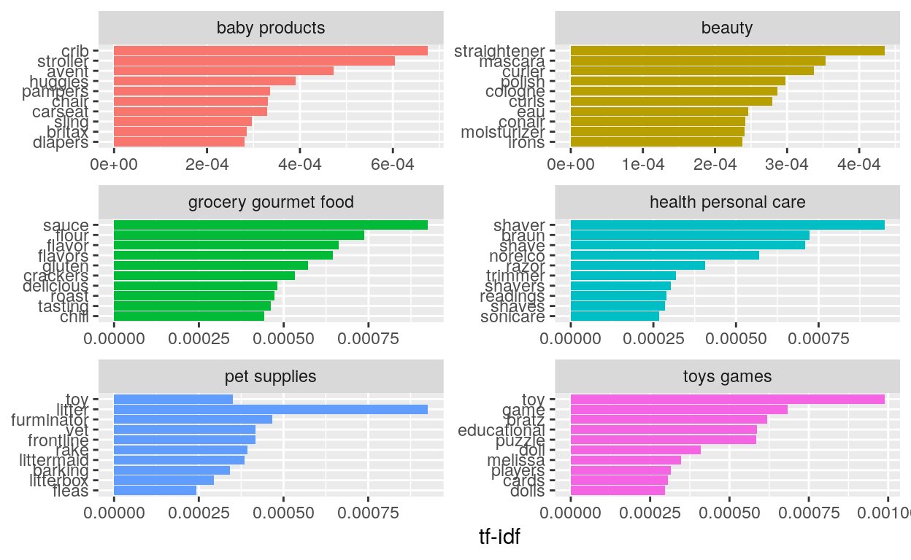
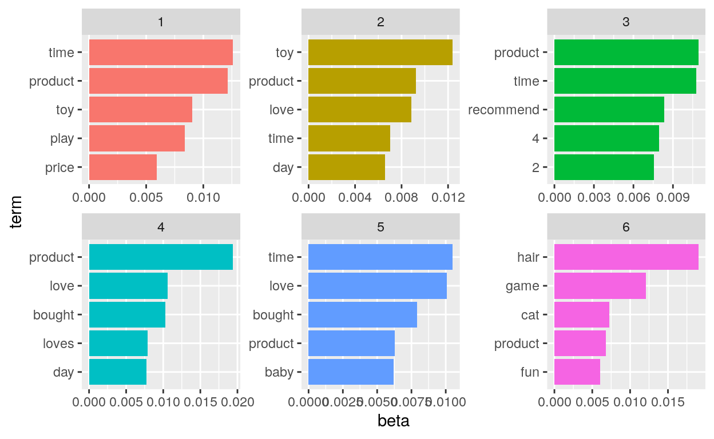
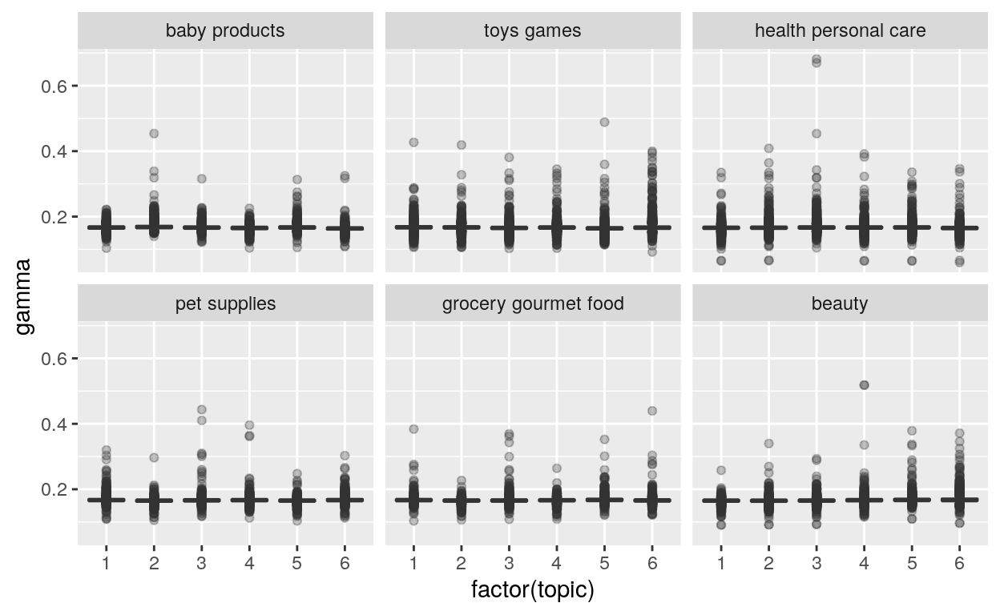

A continuación realizamos un análisis exploratorio de datos del conjunto de datos de revisión de productos de Amazon que se encuentra en Kaggle.
La idea es usar este conjunto de datos como un proxy que permita aproximarnos al problema de clasificar documentos planteado en el proyecto iconos.
Este conjunto de datos tiene tres niveles o categorías de clasificación:
y tres conjuntos de datos:
El análisis exploratorio lo vamos a realizar con el conjunto de entrenamiento y por el momento con el primer nivel de clasificación.
Las variables que tiene son:
train_40k <- read_csv("datos/train_40k.csv") %>%
clean_names()
glimpse(train_40k)
Rows: 40,000
Columns: 10
$ product_id <chr> "B000E46LYG", "B000GRA6N8", "B000GRA6N8", "B000…
$ title <chr> "Golden Valley Natural Buffalo Jerky", "Westing…
$ user_id <chr> "A3MQDNGHDJU4MK", "unknown", "unknown", "unknow…
$ helpfulness <chr> "0/0", "0/0", "0/0", "0/0", "2/4", "2/2", "1/1"…
$ score <dbl> 3, 5, 5, 5, 5, 5, 4, 3, 5, 5, 5, 1, 5, 5, 5, 4,…
$ time <dbl> -1, 860630400, 883008000, 897696000, 911865600,…
$ text <chr> "The description and photo on this product need…
$ cat1 <chr> "grocery gourmet food", "toys games", "toys gam…
$ cat2 <chr> "meat poultry", "games", "games", "games", "puz…
$ cat3 <chr> "jerky", "unknown", "unknown", "unknown", "jigs…Para evitar problemas de memoria más adelante, se crea una muestra de 20000 observaciones del conjunto de entrenamiento. Con eso vamos a trabajar:
set.seed(1234)
ind_20k <- sample(1:40000,size = 20000,replace = FALSE)
train_20k <- train_40k[ind_20k,]Añadimos un id a los registros y seleccionamos solo el texto y la categoría 1
n_reviews <- dim(train_20k)[1]
id <- 1:n_reviews
text_cat1 <- train_20k %>%
select(product_id,text,cat1) %>%
mutate(id = id)
glimpse(text_cat1)
Rows: 20,000
Columns: 4
$ product_id <chr> "B0006SKCVI", "B00011K2BA", "B0005Z86KQ", "B000D…
$ text <chr> "Huey Fong Chili Garlic Sauce 8 OzThis sauce mad…
$ cat1 <chr> "grocery gourmet food", "health personal care", …
$ id <int> 1, 2, 3, 4, 5, 6, 7, 8, 9, 10, 11, 12, 13, 14, 1…
text_cat1 %>%
group_by(cat1) %>%
tally()
# A tibble: 6 x 2
cat1 n
<chr> <int>
1 baby products 2802
2 beauty 2894
3 grocery gourmet food 1803
4 health personal care 4907
5 pet supplies 2464
6 toys games 5130
palabras <- text_cat1 %>%
unnest_tokens(word,text)
glimpse(palabras)
Rows: 1,657,994
Columns: 4
$ product_id <chr> "B0006SKCVI", "B0006SKCVI", "B0006SKCVI", "B0006…
$ cat1 <chr> "grocery gourmet food", "grocery gourmet food", …
$ id <int> 1, 1, 1, 1, 1, 1, 1, 1, 1, 1, 1, 1, 1, 1, 1, 1, …
$ word <chr> "huey", "fong", "chili", "garlic", "sauce", "8",…
data(stop_words)
palabras <- palabras %>%
anti_join(stop_words)
palabras %>%
count(word, sort = TRUE)
# A tibble: 41,620 x 2
word n
<chr> <int>
1 product 6062
2 time 3970
3 love 3453
4 bought 3199
5 toy 2945
6 hair 2767
7 2 2608
8 buy 2182
9 easy 2067
10 recommend 2055
# … with 41,610 more rowsy las visualizamos:
palabras %>%
count(word, sort = TRUE) %>%
filter(n > 2000) %>%
mutate(word = reorder(word,n)) %>%
ggplot(aes(word,n)) +
geom_col() +
xlab(NULL) +
coord_flip()
Vamos a hacer un gráfico que sirva para comparar la frecuencia relativa de palabras por categoría tomando como referencia la categoría más común que es toys games
frequencia <- palabras %>%
count(cat1,word) %>%
group_by(cat1) %>%
mutate(proporcion = n/sum(n)) %>%
select(-n) %>%
pivot_wider(names_from = "cat1", values_from = "proporcion") %>%
pivot_longer(`baby products`:`pet supplies`,names_to = "cat1",
values_to = "proporcion")
ggplot(frequencia, aes(x = proporcion, y = `toys games`,
color = abs(`toys games` - proporcion))) +
geom_abline(color = "gray40", lty = 2) +
geom_jitter(alpha = 0.1, size = 2.5, width = 0.3, height = 0.3) +
geom_text(aes(label = word), check_overlap = TRUE, vjust = 1.5) +
scale_x_log10(labels = percent_format()) +
scale_y_log10(labels = percent_format()) +
scale_color_gradient(limits = c(0, 0.001),
low = "darkslategray4", high = "gray75") +
facet_wrap(~cat1, ncol = 2) +
theme(legend.position = "none") +
labs(y = "toys games", x = NULL) 
También podemos calcular explícitamente la correlación para cada par de variables:
cor.test(data = frequencia[frequencia$cat1 == "baby products",],
~ proporcion + `toys games`)
Pearson's product-moment correlation
data: proporcion and toys games
t = 54.371, df = 6086, p-value < 2.2e-16
alternative hypothesis: true correlation is not equal to 0
95 percent confidence interval:
0.5546263 0.5884487
sample estimates:
cor
0.5717804
cor.test(data = frequencia[frequencia$cat1 == "beauty",],
~ proporcion + `toys games`)
Pearson's product-moment correlation
data: proporcion and toys games
t = 26.511, df = 5463, p-value < 2.2e-16
alternative hypothesis: true correlation is not equal to 0
95 percent confidence interval:
0.3139132 0.3609000
sample estimates:
cor
0.3376169
cor.test(data = frequencia[frequencia$cat1 == "grocery gourmet food",],
~ proporcion + `toys games`)
Pearson's product-moment correlation
data: proporcion and toys games
t = 26.196, df = 4350, p-value < 2.2e-16
alternative hypothesis: true correlation is not equal to 0
95 percent confidence interval:
0.3431868 0.3945191
sample estimates:
cor
0.3691345
cor.test(data = frequencia[frequencia$cat1 == "health personal care",],
~ proporcion + `toys games`)
Pearson's product-moment correlation
data: proporcion and toys games
t = 45.168, df = 7292, p-value < 2.2e-16
alternative hypothesis: true correlation is not equal to 0
95 percent confidence interval:
0.4494394 0.4853086
sample estimates:
cor
0.4675665
cor.test(data = frequencia[frequencia$cat1 == "pet supplies",],
~ proporcion + `toys games`)
Pearson's product-moment correlation
data: proporcion and toys games
t = 40.401, df = 5974, p-value < 2.2e-16
alternative hypothesis: true correlation is not equal to 0
95 percent confidence interval:
0.4430950 0.4829279
sample estimates:
cor
0.4632453 Vamos a calcular el estadístico tf-idf para las diferentes palabras en las categorías.
Primero, contamos la frecuencia de las palabras en cada una de las categorías:
palabras_cat1 <- text_cat1 %>%
unnest_tokens(word,text) %>%
count(cat1,word, sort = TRUE)
# Lo mismo que
# palabras2 <- text_cat1 %>%
# unnest_tokens(word,text) %>%
# group_by(cat1,word) %>%
# tally(sort = TRUE)
glimpse(palabras_cat1)
Rows: 80,977
Columns: 3
$ cat1 <chr> "toys games", "health personal care", "health personal…
$ word <chr> "the", "the", "i", "the", "and", "it", "to", "and", "t…
$ n <int> 21883, 17285, 14290, 13892, 13484, 12198, 11334, 11128…
total_palabras <- palabras_cat1 %>%
group_by(cat1) %>%
summarize(total = sum(n))
total_palabras
# A tibble: 6 x 2
cat1 total
<chr> <int>
1 baby products 270027
2 beauty 218183
3 grocery gourmet food 121393
4 health personal care 389766
5 pet supplies 218906
6 toys games 439719y finalmente, unimos ambos conjuntos:
palabras_cat1 <- left_join(palabras_cat1,total_palabras)
palabras_cat1
# A tibble: 80,977 x 4
cat1 word n total
<chr> <chr> <int> <int>
1 toys games the 21883 439719
2 health personal care the 17285 389766
3 health personal care i 14290 389766
4 baby products the 13892 270027
5 toys games and 13484 439719
6 toys games it 12198 439719
7 toys games to 11334 439719
8 health personal care and 11128 389766
9 pet supplies the 11057 218906
10 toys games a 10711 439719
# … with 80,967 more rowsPodemos visualizar la frecuencia relativa de las palabras por categoría así:
ggplot(palabras_cat1, aes(n/total, fill = cat1)) +
geom_histogram(show.legend = FALSE) +
xlim(NA,0.0009) +
facet_wrap(~cat1, ncol = 2, scales = "free_y")
palabras_cat1 <- palabras_cat1 %>%
bind_tf_idf(word, cat1, n)
palabras_cat1 <- left_join(palabras_cat1,total_palabras)
palabras_cat1 <- palabras_cat1 %>%
bind_tf_idf(word, cat1, n) %>%
select(-total) %>%
arrange(desc(tf_idf))
palabras_cat1
# A tibble: 80,977 x 6
cat1 word n tf idf tf_idf
<chr> <chr> <int> <dbl> <dbl> <dbl>
1 toys games toy 2385 0.00542 0.182 0.000989
2 health personal care shaver 337 0.000865 1.10 0.000950
3 pet supplies litter 500 0.00228 0.405 0.000926
4 grocery gourmet food sauce 162 0.00133 0.693 0.000925
5 grocery gourmet food flour 50 0.000412 1.79 0.000738
6 health personal care braun 157 0.000403 1.79 0.000722
7 health personal care shave 399 0.00102 0.693 0.000710
8 toys games game 1647 0.00375 0.182 0.000683
9 baby products crib 166 0.000615 1.10 0.000675
10 grocery gourmet food flavor 441 0.00363 0.182 0.000662
# … with 80,967 more rowsy ahora podemos visualizar digamos las 10 más importantes por grupo
palabras_cat1 %>%
arrange(desc(tf_idf)) %>%
mutate(word = factor(word, levels = rev(unique(word)))) %>%
group_by(cat1) %>%
top_n(10,wt = tf_idf) %>%
ungroup() %>%
ggplot(aes(word, tf_idf, fill = cat1)) +
geom_col(show.legend = FALSE) +
labs(x = NULL, y = "tf-idf") +
facet_wrap(~cat1, ncol = 2, scales = "free") +
coord_flip()
bigramas <- text_cat1 %>%
unnest_tokens(bigram, text, token = "ngrams", n = 2)
bigramas %>%
count(bigram, sort = TRUE)
# A tibble: 443,357 x 2
bigram n
<chr> <int>
1 of the 5744
2 in the 4886
3 i have 4865
4 it is 4822
5 is a 3568
6 on the 3369
7 this is 3245
8 and i 3177
9 this product 3042
10 and the 2963
# … with 443,347 more rows
bigramas_separados <- bigramas %>%
separate(bigram, c("palabra1","palabra2"), sep = " ")
bigramas_filtrados <- bigramas_separados %>%
filter(!palabra1 %in% stop_words$word) %>%
filter(!palabra2 %in% stop_words$word)
bigramas_filtrados
# A tibble: 161,671 x 5
product_id cat1 id palabra1 palabra2
<chr> <chr> <int> <chr> <chr>
1 B0000017QN health personal care 9869 sedona suite.i
2 B0000017QN health personal care 9869 suite.i love
3 B0000017QN health personal care 9869 soothing synthesizer
4 B0000017QN health personal care 9869 muted joy
5 B0000017QN health personal care 9869 joy comparable
6 B0000017QN health personal care 9869 wedding notices
7 B0000017QN health personal care 9869 local paper
8 B0000017QN health personal care 9869 album delivers
9 B0000017QN health personal care 9869 substitute federal
10 B0000017QN health personal care 9869 federal holiday
# … with 161,661 more rows
cuenta_bigramas <- bigramas_filtrados %>%
count(palabra1,palabra2,sort = TRUE)
cuenta_bigramas
# A tibble: 111,801 x 3
palabra1 palabra2 n
<chr> <chr> <int>
1 highly recommend 673
2 1 2 343
3 car seat 227
4 6 months 196
5 son loves 177
6 litter box 153
7 5 stars 152
8 3 months 151
9 customer service 139
10 highly recommended 127
# … with 111,791 more rows
bigramas_unidos <- bigramas_filtrados %>%
unite(bigram, palabra1, palabra2, sep = " ")
bigramas_tf_idf <- bigramas_unidos %>%
count(cat1,bigram) %>%
bind_tf_idf(bigram,cat1,n) %>%
arrange(desc(tf_idf))
bigramas_tf_idf
# A tibble: 122,550 x 6
cat1 bigram n tf idf tf_idf
<chr> <chr> <int> <dbl> <dbl> <dbl>
1 pet supplies litter box 152 0.00740 1.10 0.00813
2 grocery gourmet food gluten free 76 0.00493 1.10 0.00542
3 beauty flat iron 68 0.00302 1.79 0.00541
4 baby products baby dry 60 0.00260 1.79 0.00466
5 pet supplies dog food 47 0.00229 1.79 0.00410
6 beauty hair dryer 51 0.00227 1.79 0.00406
7 beauty curling iron 44 0.00195 1.79 0.00350
8 baby products avent bottles 42 0.00182 1.79 0.00326
9 pet supplies gentle leader 36 0.00175 1.79 0.00314
10 pet supplies cats love 35 0.00170 1.79 0.00305
# … with 122,540 more rowsRegresamos a la lista de palabras con su frecuencia y sin palabras vacías:
palabras_tidy <- text_cat1 %>%
unnest_tokens(word,text) %>%
anti_join(stop_words) %>%
count(id,word, sort = TRUE)
palabras_tidy
# A tibble: 479,761 x 3
id word n
<int> <chr> <int>
1 274 eacute 38
2 14702 bed 34
3 15303 hair 26
4 7518 seat 24
5 16935 bath 24
6 10290 hair 23
7 8784 unit 22
8 15685 food 21
9 18170 baby 21
10 3037 tea 20
# … with 479,751 more rowsPara hacer el LDA se usa la librería tm que requiere la información en un formato de matriz de términos del documento. Eso es lo que hacemos en este paso:
dtm_palabras <- palabras_tidy %>%
cast_tdm(id,word,n)LDA creamos un modelo de 6 términos:
review_lda <- LDA(dtm_palabras, k = 6, control = list(seed = 1234))Ahora, se pueden examinar las probabilidades asociadas a cada palabra por tópico
review_topics <- tidy(review_lda, matrix = "beta")
review_topics
# A tibble: 249,720 x 3
topic term beta
<int> <chr> <dbl>
1 1 eacute 1.31e-11
2 2 eacute 1.63e- 9
3 3 eacute 5.64e- 4
4 4 eacute 3.35e-11
5 5 eacute 1.79e-12
6 6 eacute 4.73e-11
7 1 bed 6.22e- 4
8 2 bed 3.10e- 5
9 3 bed 6.66e- 4
10 4 bed 3.77e- 3
# … with 249,710 more rowsPodemos hallar cuales son las palabras más comunes por cada tema:
review_top_terms <- review_topics %>%
group_by(topic) %>%
top_n(5, beta) %>%
ungroup() %>%
arrange(topic, -beta)
review_top_terms
# A tibble: 30 x 3
topic term beta
<int> <chr> <dbl>
1 1 time 0.0126
2 1 product 0.0121
3 1 toy 0.00902
4 1 play 0.00837
5 1 price 0.00595
6 2 toy 0.0124
7 2 product 0.00924
8 2 love 0.00883
9 2 time 0.00701
10 2 day 0.00657
# … with 20 more rowsVisualmente:
review_top_terms %>%
mutate(term = reorder_within(term, beta, topic)) %>%
ggplot(aes(term, beta, fill = factor(topic))) +
geom_col(show.legend = FALSE) +
facet_wrap(~ topic, scales = "free") +
coord_flip() +
scale_x_reordered()
Calculamos la probabilidad por documento y por tema. En este caso, cada documento constituye una revisión.
review_topics_gamma <- tidy(review_lda, matrix = "gamma")
review_topics_gamma <- review_topics_gamma %>%
mutate(id = as.numeric(document))Para tratar de determinar hasta que punto los tópicos detectados corresponden a las clasificaciones de cat1 vamos a combinar la información de ambos en cat1_gamma y a visualizarlos:
cat1_gamma <- left_join(review_topics_gamma,text_cat1)
cat1_gamma %>%
mutate(cat1 = reorder(cat1, gamma * topic)) %>%
ggplot(aes(factor(topic), gamma)) +
geom_boxplot(outlier.alpha = 0.3) +
facet_wrap(~ cat1)
cat1_classifications <- cat1_gamma %>%
group_by(cat1, id) %>%
top_n(1, gamma) %>%
ungroup()
cat1_topics <- cat1_classifications %>%
count(cat1, topic) %>%
group_by(cat1) %>%
top_n(1, n) %>%
ungroup() %>%
transmute(consensus = cat1, topic)Podemos calcular cual es el tṕico más frecuente o común en cada una de las categorías
cat1_topics <- cat1_classifications %>%
count(cat1, topic) %>%
group_by(cat1) %>%
top_n(1, n) %>%
ungroup() %>%
transmute(consensus = cat1, topic)
cat1_topics
# A tibble: 6 x 2
consensus topic
<chr> <int>
1 baby products 2
2 beauty 6
3 grocery gourmet food 5
4 health personal care 3
5 pet supplies 6
6 toys games 1y al unirlo con las cat1_classifications podemos ver cuales observaciones se encuentran incorrectamente clasificadas:
cat1_classifications %>%
inner_join(cat1_topics, by = "topic") %>%
filter(cat1 != consensus)
# A tibble: 14,888 x 8
document topic gamma id product_id text cat1 consensus
<chr> <int> <dbl> <dbl> <chr> <chr> <chr> <chr>
1 19059 1 0.201 19059 B000CEM36I "Cascade ma… healt… toys gam…
2 9780 1 0.207 9780 B0002KHTZ2 "I know a l… healt… toys gam…
3 11176 1 0.205 11176 B000KVWNEK "I moved ba… pet s… toys gam…
4 14898 1 0.384 14898 B000JZ5CQS "As of Augu… groce… toys gam…
5 19457 1 0.198 19457 B0000649E1 "My aunt us… baby … toys gam…
6 9911 1 0.193 9911 B000P26UEI "We bought … baby … toys gam…
7 14997 1 0.303 14997 B0009YUEG2 "I love thi… pet s… toys gam…
8 3527 1 0.271 3527 B000EM6PC6 "There are … groce… toys gam…
9 9409 1 0.209 9409 B0002G3UY0 "I've drank… groce… toys gam…
10 9694 1 0.183 9694 B000CMF1A0 "I was SO e… groce… toys gam…
# … with 14,878 more rows
cat1_classifications
# A tibble: 19,992 x 7
document topic gamma id product_id text cat1
<chr> <int> <dbl> <dbl> <chr> <chr> <chr>
1 14964 1 0.215 14964 B0006N8XZK "I initially bought… toys ga…
2 19059 1 0.201 19059 B000CEM36I "Cascade manufactur… health …
3 9780 1 0.207 9780 B0002KHTZ2 "I know a lot of pe… health …
4 10992 1 0.251 10992 B000ETREQA "My kids (4 and 7) … toys ga…
5 11176 1 0.205 11176 B000KVWNEK "I moved back home … pet sup…
6 14898 1 0.384 14898 B000JZ5CQS "As of August 17, 2… grocery…
7 19457 1 0.198 19457 B0000649E1 "My aunt uses these… baby pr…
8 9911 1 0.193 9911 B000P26UEI "We bought the fill… baby pr…
9 14997 1 0.303 14997 B0009YUEG2 "I love this litter… pet sup…
10 17948 1 0.224 17948 B000PC51LQ "The Smart Splash S… toys ga…
# … with 19,982 more rowsEs posible detectar diferencias en las palabras usadas por categoría usando tf-idf
Sin embargo, el modelo LDA no parece separar muy bien las diferentes categorías
Próxima vez: